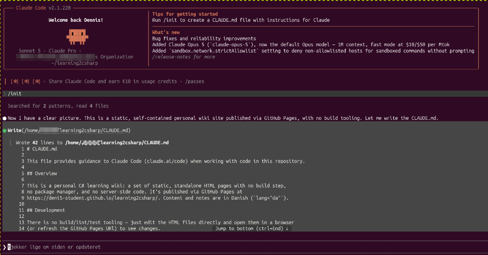

Min log over hvad der sker med wiki'en, nyeste indlæg øverst — scroll ned for at se historikken.
5. august 2026
Besøgstæller tilføjet med egen Azure-server
Oprettet min første rigtige backend-server — en gratis ASP.NET Core-app på Azure App Service (F1 free tier) — som holder styr på et besøgstal. Wiki-forsiden viser nu, hvor mange gange den er blevet besøgt, hentet direkte fra serveren.
- Oprettet en Azure-konto og en gratis App Service (.NET 10, Denmark East).
- Bygget en lille ASP.NET Core Minimal API med en fil-baseret tæller, der overlever redeploys.
- Sat CORS op, så kun mine egne sider må hente tallet.
- Samme server tæller nu besøg på både denne wiki og min virksomhedsside, knits.gl — med hver sin separate tæller.
3. august 2026
Claude Code tilføjet som medhjælper på wiki'en
I dag har jeg fået hjælp fra Claude Code til at rydde godt op i og udvide wiki'en. Kort opsummeret er der sket følgende:

- Rettet en række sidebar-links, der pegede på forkerte filnavne, og fikset navigationen på CSS Styling-siden.
- Fjernet Retningslinjer-siden, som ikke var relevant for formålet med wiki'en.
- Tilføjet nye emner under Vidensbase: Ubuntu, Python, Windows (med WSL som underemne), samt C# Learning (med Visual Studio og JetBrains Rider som underemner).
- Udfyldt CSS Styling-siden med rigtigt indhold i stedet for det gamle C#-eksempel.
- Centreret og gjort indholdsområdet bredere på alle sider for bedre læsevenlighed.
- Omdøbt sidebar-sektionen "Personligt" til "Skole".
- Omdøbt denne side fra "Daglige Notater" til "Opdateringer", da opdateringer ikke sker dagligt.